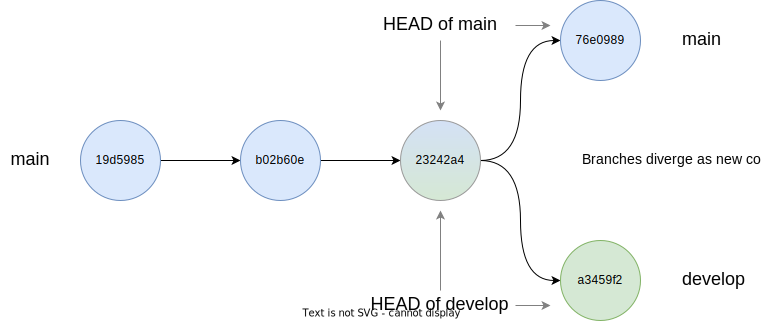

Branches and workflows
Questions
- How often should I create branches?
- How should I organise my branches?
- How can I delete branches safely?
Objectives
- Understand branch-based workflows
- Understand how to name branches
- Understand how and when to delete branches without losing history
We’ve just seen an example of creating a branch to do some development work, and merging the changes back to the main branch.
Our repository only has a few files, but if we were working on a repository with dozens or hundreds of files, creating a branch may seem like it’s inefficient, especially if the change we’re working on only affects one or two files.
However, git is designed for working efficiently with large codebases. When you create a branch, internally, git isn’t creating another copy of your entire repository. Instead, it’s storing a reference to the HEAD of the branch which you’re starting from, and saying - here’s a new branch which starts at this commit.

So, internally, a new branch isn’t really a “copy” of anything, it’s a reference to a new set of commits. You will only add new content to the repository when you add some new changes as a new commit, and the only extra content which your branch needs is the difference those changes represent.
This is why you’ll see people saying things like “branches are free” or “branches are cheap” in Git, and it’s one of the differences between Git and older version control systems, where a branch really did equal a copy of your entire codebase.
It also gives us a guiding principal for how to branch our code. In general, small branches are better - ideally, restricted to one feature or bugfix.
This way of working with git, where a team collaborates with their own set of branches, is called a branch-basked workflow.
Large or busy software development teams often use a convention for naming branches: Git Flow is one popular example, although it’s fallen out of fashion in favour of other workflows which are suited to modern commercial software deployment practices.
These are likely to be overkill for the sorts of code you’ll be working on, but they have some features which are useful at a small scale.
One convention is a two-part naming strategy where the first part indicates what kind of branch this is, and the second part gives more details:
- feature-matrix-division
- bugfix-divide-by-zero
- release-v1.2
A feature branch adds a new ability or interface to the code; a bugfix is to correct a mistake.
And release branches allow you to collect a set of features for a planned release into a single branch where they can be tested together and then merged back to the main branch when they’re all ready to go.
As a codebase is worked on over time, it will accumulate branches. It can be helpful to remove these, so that you’re not having to sort through bugfixes from last year when inspecting your repository’s branches.
A branch, in one sense, is nothing more than a set of commits, so once those commits have been merged into another branch, it’s safe to delete the branch - we won’t lose any history by doing so.
You might also want to keep certain branches - for example, release branches are a way of being able to switch to a particular state of your codebase’s history.
Let’s add another branch to Alice’s repository (remembering that branching is a cheap operation):
git checkout -b just-testingSwitched to a new branch 'just-testing'nano mean.pyIt doesn’t matter what you add to mean.py - a comment is fine. Now, add and commit the changes to the current branch, which is just-testing:
git add mean.py
git commit -m "Just testing"[just-testing 56edc59] Just testing
1 file changed, 2 insertions(+)If we use git branch, we can see that there are now three branches in the repo:
git branch development
* just-testing
mainLet’s change back to the main branch:
git checkout mainSwitched to branch 'main'To help Alice tidy up her branches, git can list only those branches which have been merged, using the --merged flag.
git branch --merged development
* mainWe can see that the new branch, just-testing, isn’t listed: this is because it contains commits which have not yet been merged into the current branch.
In other words, the branches listed with the --merged flag are safe to delete. To delete a branch, use git branch with the -d flag and the name of the branch to be deleted
git branch -d developmentDeleted branch development (was 7290b1c).If we accidentally ask git to delete a branch which we haven’t yet merged using the -d flag, git raises an error, because we’re asking it to remove work which hasn’t been merged into another branch:
git branch -d just-testingerror: the branch 'just-testing' is not fully merged.
If you are sure you want to delete it, run 'git branch -D just-testing'If we’re sure that this branch isn’t worth keeping, the capital -D flag will get rid of it.
Key Points
- Creating a branch is a cheap, fast operation
- Branch-based workflows are a good way for an individual or team to organise their repository
- You can pick a naming convention which best suits your needs
- Once a branch is merged, it can be safely deleted
All materials copyright Sydney Informatics Hub, University of Sydney